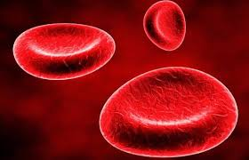
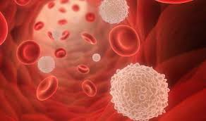
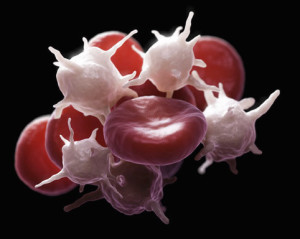

Kroz sva naša tkiva i organe neprekidno cirkulišu tjelesne tečnosti-krv i limfa. One povezuju sve sisteme organa u jedinstvenu cjelinu, transportuju hranljive materije i kiseonik do svih ćelija, iz ćelija uklanjaju štetne materije, imaju ulogu u odbrani tijela, a krv učestvuje i u regulaciji tjelesne temperature.
U tijelu odraslog čovjeka ima oko 5 litara krvi. Limfe je mnogo više, čak 25% tjelesne težine. Izračunaj koliko limfe ima u tvom tijelu.
Krv se sastoji od krvne plazme i krvnih ćelija. Najvećim dijelom krvnu plazmu čini voda (preko 90%); u njoj su rastvorene bjelančevine, aminokisjeline, šećeri, mineralne soli, vitamini, hormoni...Ove materije krvna plazma transportuje do ćelija iz kojih prima štetne materije i prenosi ih do organa preko kojih se one izlučuju.
U krvnoj plazmi plivaju krvne ćelije: eritrociti-crvena krvna zrnca, leukociti-bijela krvna zrnca i trombociti-krvne pločice. Iako se razlikuju po obliku, veličini i funkciji, sve krvne ćelije nastaju od matičnih (stem) ćelija. Proces stvaranja novih krvnih ćelija je veoma složen i naziva se hematopoeza, odvija se u srži pljosnatih kostiju (rebra, grudna kost, lopatica, karlica), slezini i limfnim čvorovima.
Eritrociti su najbrojnije ćelije u krvi, u 1 mm3 krvi odraslog muškarca ima oko 5 miliona eritrocita! Crvena boja eritrocita potiče od bjelančevine hemoglobina. Hemoglobin sadrži gvožđe, koje u plućima vezuje kiseonik i prenosi ga do ćelija. Kada se hemoglobin oslobodi kiseonika u ćelijama, veže ugljenik(IV)-oksid i transportuje ga do pluća.
Crvena krvna zrnca nemaju jedro; Odsustvo jedra iz ćelije obezbjeđuje više prostora za molekule hemoglobina. Kao i sve krvne ćelije i eritrociti nastaju od matičnih (stem) ćelija u kostnoj srži. Životni vijek ovih ćelija je do 120 dana, nakon čega se razgrađuju u sljezini.
|  | Na slici su prikazana crvena krvna zrnca, odnosno ERITROCITI |
Za razliku od eritrocita, bijela krvna zrnca imaju jedro. Ove ćelije mogu da mijenjaju oblik i imaju sposobnost ameboidnog kretanja. Zahvaljujući ovim osobinama leukociti mogu da prolaze između ćelija. Leukociti predstavljaju osnovu odbrambenog sistema koji štiti tijelo od infekcija. Uništavaju mikroorganizme i viruse koji prodiru u tijelo-"progutaju ih" i razlože u svojoj citoplazmi. Leukociti odstranjuju i djelove uginulih ćelija. Jedan leukocit može da uništi nekoliko mikroorganizama, a zatim propada. Zbog toga organizam mora stalno da proizvodi leukocite. Broj leukocita, prilikom bolesti, može se uvećati i do dvadeset puta. Povećan broj leukocita jeste znak da u tijelu postoji neka infekcija.
|  | bijelom bojom su predstavljena bijela krvna zrnca, odnosno LEUKOCITI |
U slučaju da se posiječemo, na mjesto povrede pristižu i nagomilavaju se najmanje krvne ćelije-trombociti. Oni oslobađaju hemijske materije, pod čijim se uticajem bjelančevine rastvorene u krvnoj plazmi pretvaraju u niti. Bjelančevinaste niti na mjestu povrede grade mrežu, na koju se lijepe trombociti i eritrociti obrazujući ugrušak ili tromb. Ugrušak se postepeno skuplja istiskujući bistru žutu tečnost koja se naziva krvni serum.
|  | Na slici se vide leukociti i TROMBOCITI. Trombociti grade mrežu koja zadržava krvne ćelije i time sprečava krvarenje. |